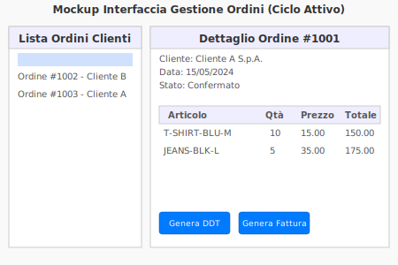
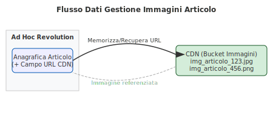

Gap Analysis e Soluzione TO-BE
Questa sezione illustra le principali differenze (Gap) tra la situazione attuale (AS-IS) e gli obiettivi futuri (TO-BE) per Dreamwear, e come Ad Hoc Revolution verrà configurato o personalizzato per colmare tali lacune.
Gap e Soluzione: Ciclo Attivo (Vendite)
Implementazione Soluzione TO-BE
Configurazioni specifiche:
- Definizione di listini prezzi dedicati al B2B, con scontistiche per volume/cliente.
- Flusso d'ordine cliente con stati personalizzati (es. In attesa approvazione, Confermato, In preparazione, Spedito).
- Personalizzazione dei layout di stampa per offerte, conferme d'ordine, DDT e fatture.
Mockup/Esempio Interfaccia (Ad Hoc Revolution):
Spiegazione del Gap e della Soluzione
Gap Identificati:
- Gestione generica dei listini non adatta alle politiche commerciali B2B specifiche di Dreamwear.
- Visibilità limitata sullo stato di avanzamento degli ordini cliente.
- Documenti standard non completamente allineati con l'immagine aziendale.
Soluzione Proposta:
Si sfrutteranno le funzionalità di configurazione dei listini e delle condizioni commerciali di Ad Hoc. Verranno impostati flussi documentali che permettano un tracciamento puntuale. I report e i documenti di vendita verranno personalizzati tramite gli strumenti di Ad Hoc per riflettere il branding Dreamwear e includere tutte le informazioni necessarie per i clienti B2B.
Gap e Soluzione: Gestione Catalogo e Immagini Articoli
Implementazione Soluzione TO-BE
Strategia Immagini: Le immagini degli articoli saranno caricate su un bucket CDN (Content Delivery Network) esterno per ottimizzare la distribuzione e le performance.
Integrazione in Ad Hoc:
- Nell'anagrafica articolo di Ad Hoc, un campo specifico (es. URL Immagine Esterna) conterrà il link diretto all'immagine principale dell'articolo sul CDN.
- Questo URL potrà essere utilizzato per visualizzare l'immagine in anteprime interne al gestionale (se customizzate) o passato a sistemi esterni (es. cataloghi digitali, e-commerce futuri).
Schema Flusso Dati Immagini:
Spiegazione del Gap e della Soluzione
Gap Identificati:
- Ad Hoc Revolution standard potrebbe non offrire una gestione ottimale e scalabile di grandi quantità di immagini prodotto direttamente nel database, specialmente per l'accesso web.
- Necessità di performance elevate per la visualizzazione delle immagini in eventuali cataloghi online o strumenti di vendita.
Soluzione Proposta:
L'utilizzo di un CDN disaccoppia la memorizzazione delle immagini dal database dell'ERP, migliorando le prestazioni e la flessibilità. Ad Hoc Revolution manterrà il collegamento logico all'immagine tramite URL. Questo approccio garantisce che le immagini siano facilmente aggiornabili e accessibili, e riduce il carico sul server ERP. La scelta del CDN sarà basata su costi, affidabilità e facilità di integrazione per il caricamento/gestione dei file.
Altre Aree di Intervento (Placeholder)
Seguiranno dettagli per le seguenti aree:
- Ciclo Passivo (Acquisti): Ottimizzazione del flusso d'ordine a fornitore, controllo entrate merci e registrazione fatture.
- Logistica e Magazzino: Gestione avanzata delle ubicazioni, valorizzazione delle scorte, inventario.
- Contabilità e Controllo di Gestione: Personalizzazione del piano dei conti, centri di costo/ricavo, reporting direzionale.